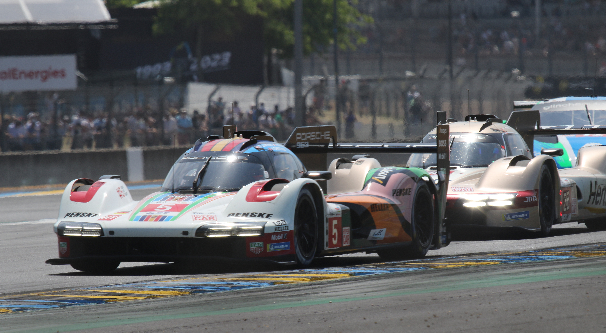
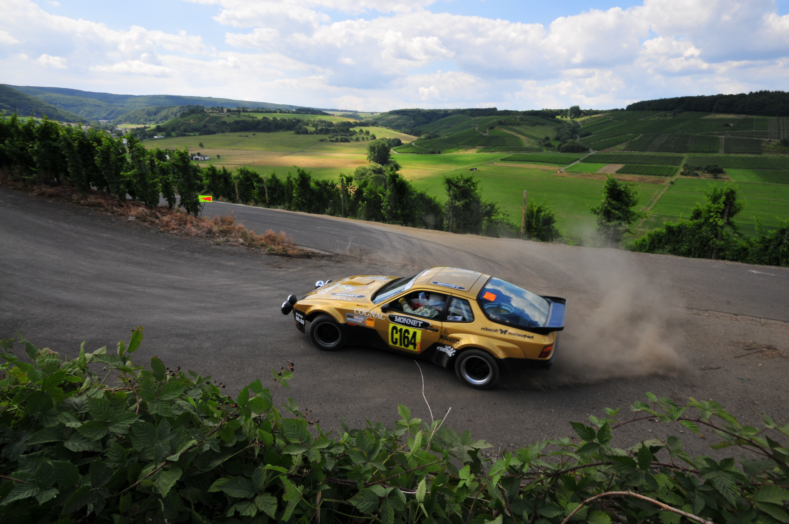
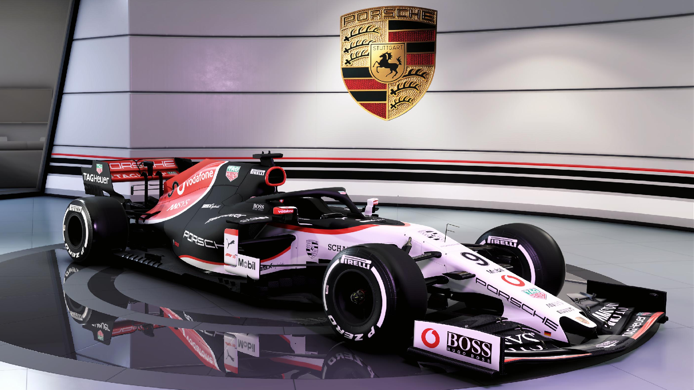
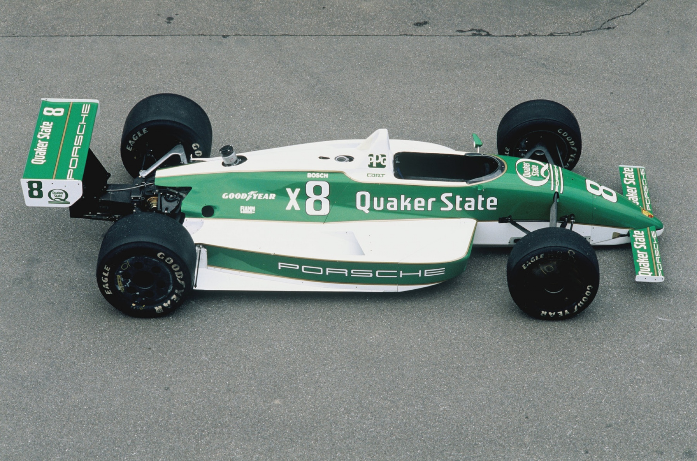
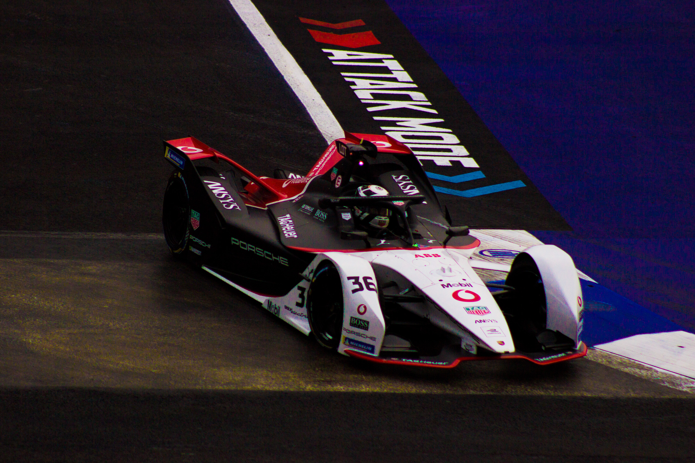
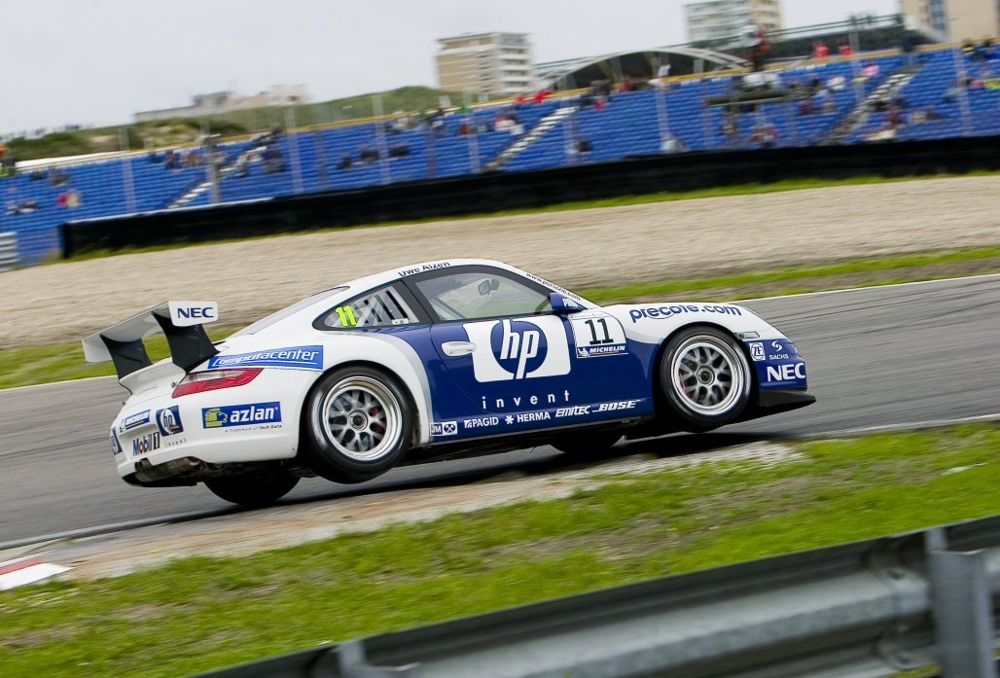

Porsche
v Motosporte
-

24 Hours of Le Mans
The Porsche 917 is considered one of the most iconic racing cars of all time and gave Porsche their first 24 Hours of Le Mans wins, while open-top versions of it dominated Can-Am racing.
Learn More -

Rally
The various versions of the Porsche 911 proved to be a serious competitor in rallies. The Porsche works team was occasionally present in rallying from the 1960s to the late 1970s. In 1967 the Polish driver Sobiesław Zasada drove a 912 to capture the European Rally Championship for Group 1 series touring cars
Learn More -

Formula One
Despite Ferdinand Porsche having designed Grand Prix cars in the 1920s and 1930s for Mercedes and Auto Union, the Porsche AG never felt at home in single-seater series.
Learn More -

IndyCar
Porsche first attempted to compete in the 1980 Indianapolis 500 with an engine initially based on the 935 sports car flat 6 with Interscope Racing as the entrant and Danny Ongais as driver.
Learn More -

Formula E
In July 2017, Porsche confirmed that they would leave the FIA World Endurance Championship at the end of the season in order to focus on their Formula E campaign, which was set to begin with the 2019–20 season. This meant that Porsche would be entering the series at the same time as the Mercedes-Benz EQ Formula E Team, though the latter already competed in the 2018–19 season through the affiliated HWA Racelab team.
Learn More -

Carrera Cup and amateur racing
Porsche Carrera Cup (sometimes abbreviated PCC) is a number of one-make racing by Porsche premier series competed with, initially Porsche 911 Carrera Cup, then later Porsche 911 GT3 Cup cars.
Learn More